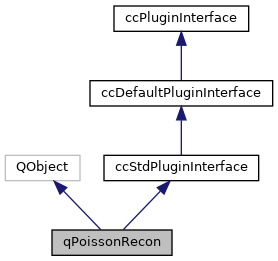
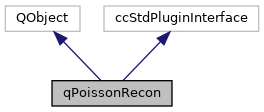

|
ACloudViewer
3.9.3
A Modern Library for 3D Data Processing
|
|
ACloudViewer
3.9.3
A Modern Library for 3D Data Processing
|
Wrapper to the "Poisson Surface Reconstruction (Version 9)" algorithm. More...
#include <qPoissonRecon.h>


Protected Member Functions | |
| void | doAction () |
| Slot called when associated ation is triggered. More... | |
Protected Attributes | |
| QAction * | m_action |
| Associated action. More... | |
Wrapper to the "Poisson Surface Reconstruction (Version 9)" algorithm.
"Poisson Surface Reconstruction", M. Kazhdan, M. Bolitho, and H. Hoppe Symposium on Geometry Processing (June 2006), pages 61–70 http://www.cs.jhu.edu/~misha/Code/PoissonRecon/
Definition at line 17 of file qPoissonRecon.h.
|
protected |
Slot called when associated ation is triggered.
Definition at line 251 of file qPoissonRecon.cpp.
References ccHObject::addChild(), ccPointCloud::addScalarField(), PoissonReconLib::Parameters::boundary, ccDrawableObject::colorsShown(), ccScalarField::computeMinAndMax(), ccMesh::computeNormals(), PoissonReconLib::Parameters::density, PoissonReconLib::Parameters::depth, PoissonReconLib::Parameters::DIRICHLET, doReconstruct(), PoissonReconLib::Parameters::finestCellWidth, PoissonReconLib::Parameters::FREE, cloudViewer::BoundingBoxTpl< T >::getDiagNormd(), ccShiftedObject::getGlobalScale(), ccShiftedObject::getGlobalShift(), ccObject::getName(), ccGenericPointCloud::getOwnBB(), ccObject::getUniqueID(), ccPointCloud::hasColors(), ccPointCloud::hasNormals(), ccObject::isA(), PoissonReconLib::Parameters::linearFit, PoissonReconLib::Parameters::NEUMANN, CV_TYPES::POINT_CLOUD, PoissonReconLib::Parameters::pointWeight, CCShareable::release(), result, s_cloud, s_densitySF, s_mesh, s_meshVertices, s_params, PoissonReconLib::Parameters::samplesPerNode, ccPointCloud::setCurrentDisplayedScalarField(), ccObject::setEnabled(), ccShiftedObject::setGlobalScale(), ccShiftedObject::setGlobalShift(), ccObject::setName(), ccDrawableObject::setVisible(), ccDrawableObject::showColors(), ccScalarField::showNaNValuesInGrey(), ccDrawableObject::showSF(), cloudViewer::PointCloudTpl< T >::size(), ccMesh::size(), cloudViewer::utility::Sleep(), PoissonReconLib::Parameters::threads, ccPointCloud::unallocateColors(), and PoissonReconLib::Parameters::withColors.
|
protected |
Associated action.
Definition at line 41 of file qPoissonRecon.h.